负载生成器与场景运行
目标
- 掌握负载机的添加与使用
- 掌握场景运行页面的组成及其作用
一、负载生成器(Load Generator)
负载生成器又俗称负载机
性能测试就要面临模拟大量的虚拟用户并发请求，单台负载机就面临自身硬件性能瓶颈问题，需要扩展多台负载机上运行达到减压不减虚拟用户的目的；
在 LR 中运行场景内脚本的机器被称为负载机
使用负载机 流程
- 启动Load Generator
- 添加负载机
- 场景-用户组(脚本)选择相应的负载机
1.启动 Load Generator
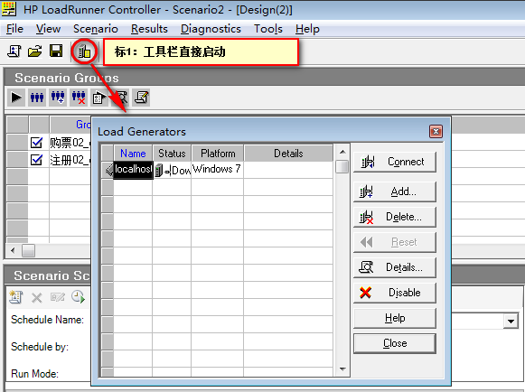
1. 通过工具栏启动，点击 标1
2. 通过菜单栏(Scenario) -> Load Generator
2. 添加负载机
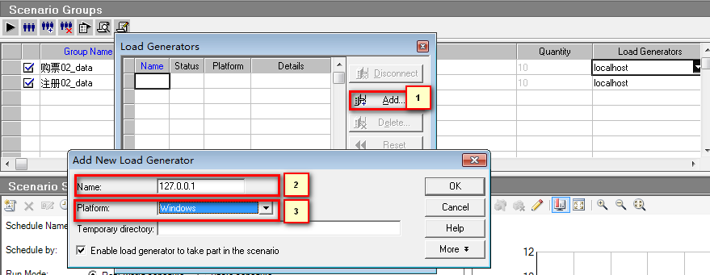
标1：点击添加负载机
标2：输入负载机IP、机器名；如果添加本机可以输入本机 IP 或 localhost
标3：选择负载机平台(操作系统)，支持 UNIX、Windows
3. 扩展 测试连接负载机
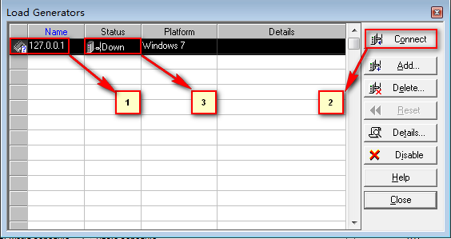
标1：选中负载机
标2：测试连接负载机
标3：查看测试结果(Ready：通过；Down:未连接；Failed：失败)
提示：
负载机需要安装LR或者Load Generator
4. 扩展 Load Generator安装说明
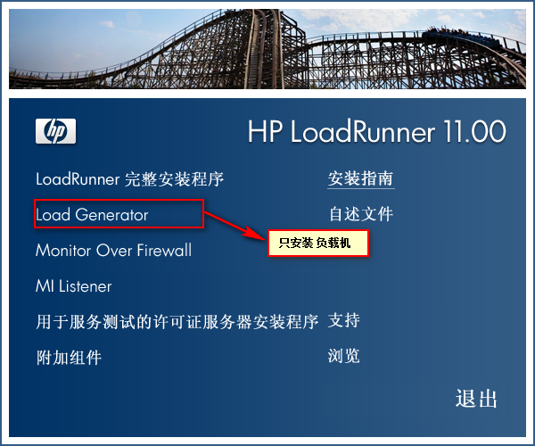
- Windows直接通过LR安装包安装
- Linux需要从官网或其他网站下载loadrunner-11-load-generator.iso
这里我们说明下Windows下安装Load Generator的位置
5. 扩展 负载机配置及注意事项
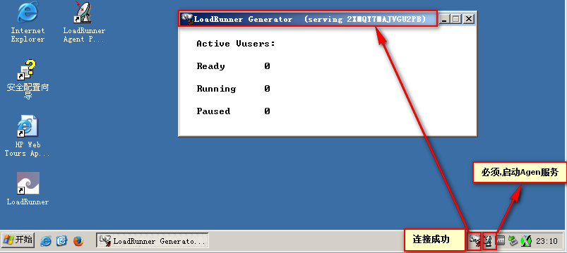
注意事项：
1. 网络：负载机与控制机网路通畅；使用 ping 192.168.x.x
2. 代理服务程序：
说明：负载机必须启动 LoadRunner Agent Process 代理服务程序；
(位置：开始程序 -> HP LoadRunenr -> Advanced Settings -> LoadRunner Agent Process)
3. 防火墙：负载机上的防火墙为关闭状态；
4. 权限配置：
说明：负载机运行设置工具内输入负载机本机登录用户名和密码，目的解决是控制机远程连接负载机的权限问题
(位置：开始程序 -> HP LoadRunner -> Tools ->
LoadRunner Agent Runtime Settings Configuration)
6. 扩展 负载机授权配置图
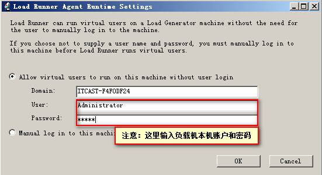
1.如上图设置，能够解决LR控制机连接负载机的权限问题 2.如果选择 Allow virtual ...后 LoadRunner Agent Process 服务消失，也可以选择使用 Manual log ...手动登录的方式实现授权！
二、场景运行
2.1 切换运行界面
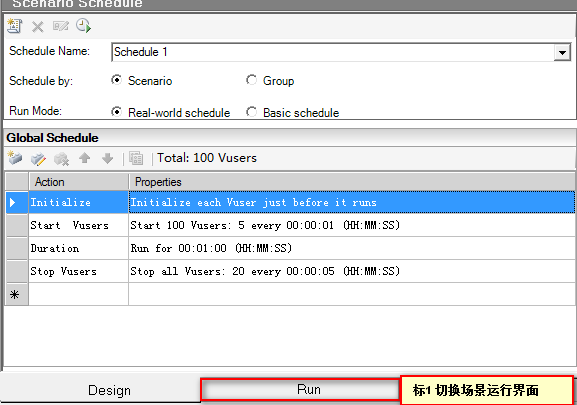
在场景设计页面下，点击 标1 切换到场景运行界面
2.2 场景运行界面
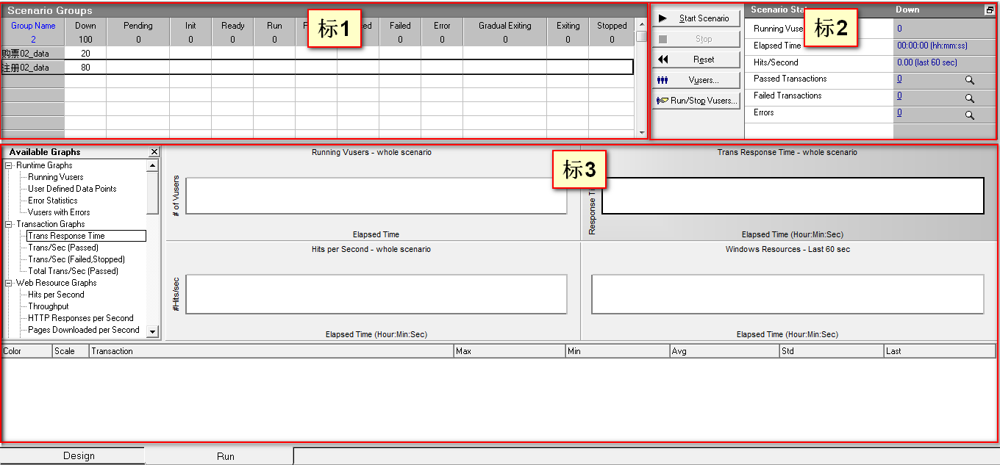
标1：场景用户组虚拟用户运行状态图
标2：场景运行状态概览图
标3：可用性能计数器及性能计数器指标走向图
提示：
1). 启动场景及场景运行完成，关注点在标2区域
2). 场景启动，虚拟用户未加载完之前，关注点在标1区域
3). 场景启动，虚拟用户加载完成，持续运行阶段，关注点在标3区域
2.2.1 标1-虚拟用户运行状态图
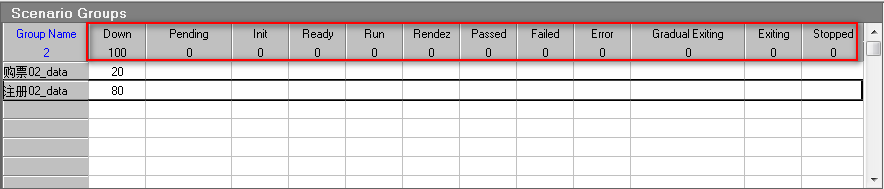
1). Down(关闭)：Vuser处于关闭状态
2). Pending(挂起)：Vuser已创建，可以初始化，正将脚本传输到负载机
3). Init(初始化)：Vuser正在负载机上执行初始化
4). Ready(就绪)：Vuser已执行脚本初始化部分(init函数)，可以运行Action函数
5). Run(正在运行)：Vuser脚本正在运行
6). Rendezvous(集合点)：Vuser到达集合点，等待条件满足释放
7). Passed(完成并通过)：Vuser已运行结束，状态为通过
8). Failed(完成并失败)：Vuser已运行结束，状态为失败
9). Error(错误)：Vuser运行中发生了错误
10). Gradual Exiting(逐步退出)：Vuser正在运行退出前的最后一次迭代
11). Exiting(退出)：Vuser已经完成操作，正在退出
12). Stopped(停止)：Vuser被停止，不在运行
需要重点关注5、6、7、8
2.2.2 标2-场景运行状态概览图
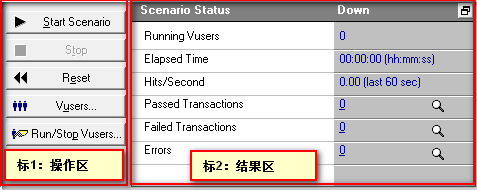
标1. 操作区：
1). Start Scenario:运行当前场景
2). Stop:停止正在场景
3). Reset:清除上次场景运行记录
4). Vuers...:对场景当前选中脚本的虚拟用户进行修改(运行、添加、删除、指定负载机)
5). Run/Stop Vusers...：对当前场景内虚拟用户进行操作(运行、停止)
标2. 结果区：
1). Running Vusers：运行用户数
2). Elapsed Time：运行时间
3). Hits/Second：每秒点击数
4). Passed Transactions：通过事务数
5). Failed Transactions：失败事务数
6). Errors：错误数
2.2.3 标3-可用性能计数器及性能计数器图表
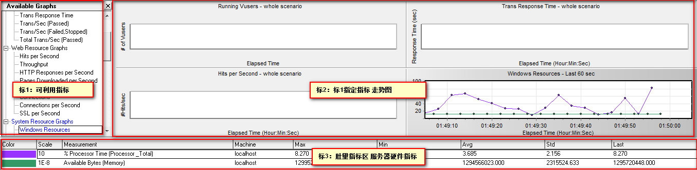
标1：可在标2检测的指标；
标2：显示标1指定指标走组图；在标1选中指标双击或拖拽到标2
标3：对应用服务器硬件资源(CPU、内存、网络、磁盘)等性能指标进行度量统计；
提示：
1). 标3度量区,度量项跟聚不同的性能指标有所不同，但是我们大多数只关注及项
(Max：最大值；Min：最小值；Avg：平均值；Std：标准偏差)
2.4 运行

1). 以上运行数据，虚拟用户共10，场景内含两个脚本，虚拟用户数比例(8:2)
2). 场景运行时长：1分09秒 （Elapsed Time）
3). 每秒点击率：50.75
4). 通过事务数：274
提示：
1. 以上数据，只是运行主要概况；
2. 详细报告数据可以通过Analyze Result得到
2.5 打开 Analyze Result(分析报告)
- 启动Analyze Result
- 预览报告
2.5.1 启动Analyze Result
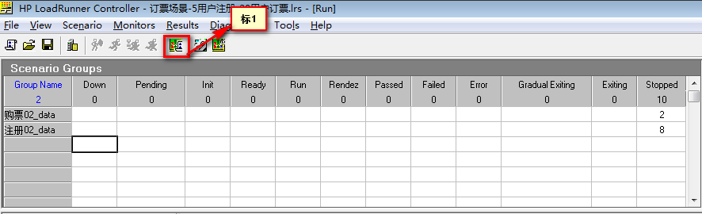
- 通过工具栏 标1 打开Analyze Result
- 通过菜单栏(Results->Analyze Result)
2.5.2 预览报告
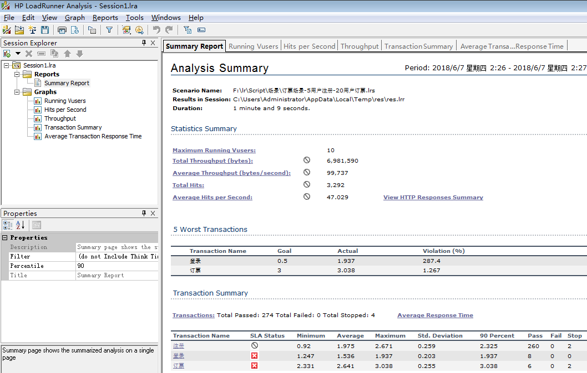
说明：
1. 由于 Analysis 还没有学习，所以在这里先使用下它生成报告
2. 报告具体内容，后面相应章节会具体学习；